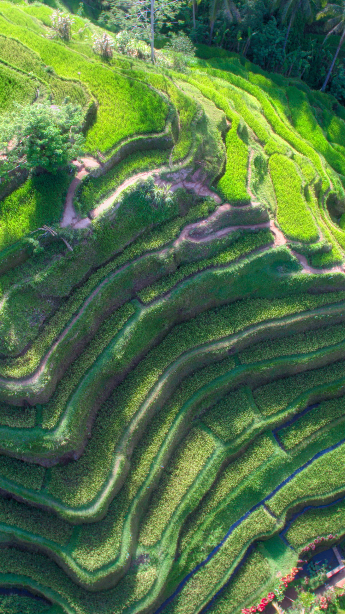

The Cordillera Administrative Region (CAR) is a landlocked region located in the northern part of Luzon, the largest island in the Philippines. It is known for its stunning mountainous landscapes, rich cultural heritage, and vibrant indigenous communities. CAR is composed of six provinces and one highly urbanized city. Here is a list of the provinces and their respective capital cities:
Abra is the province known for its rugged terrain and scenic mountain ranges. Its capital city, Bangued, features historical sites such as the Bangued Cathedral and the Calaba Bridge. Abra is also home to traditional handicrafts, including the famous abel woven cloth.
Apayao is a province known for its pristine forests, winding rivers, and diverse wildlife. Its capital city, Conner, offers opportunities for nature exploration and adventure. Apayao is also home to various indigenous tribes, including the Isnag and Kalinga communities.
Benguet is often referred to as the "Salad Bowl of the Philippines" due to its thriving agricultural industry, particularly in the cultivation of highland vegetables. The capital city of Benguet is La Trinidad, which hosts the annual Panagbenga Festival, a colorful flower festival.
Ifugao is renowned for its magnificent rice terraces, which are recognized as a UNESCO World Heritage Site. The capital town of Ifugao is Lagawe, where visitors can learn about the indigenous Ifugao culture and explore the beautiful Banaue Rice Terraces.
Kalinga is known for its rugged mountains, pristine rivers, and traditional tattoo artistry. Its capital town is Tabuk, where visitors can experience the rich cultural traditions of the Kalinga people. Kalinga is also a popular destination for adventure activities such as river rafting and hiking.
Mountain Province as its name suggests, Mountain Province is characterized by its picturesque mountainous landscapes and vibrant indigenous cultures. Bontoc serves as the capital town, offering opportunities to learn about the traditions of the indigenous tribes and visit the famous Maligcong Rice Terraces.
In addition to these provinces, CAR also includes the highly urbanized city of Baguio. Baguio City, often referred to as the "Summer Capital of the Philippines," is a popular tourist destination due to its cool climate, scenic views, and cultural attractions. The city is known for its parks, such as Burnham Park and Mines View Park, as well as the iconic Baguio Cathedral and the colorful Panagbenga Festival.
The Cordillera Administrative Region offers a unique blend of natural beauty, cultural heritage, and traditional practices. It attracts visitors with its breathtaking mountain ranges, terraced rice fields, vibrant festivals, and the warm hospitality of its indigenous communities. The region is a haven for nature lovers, adventure enthusiasts, and those seeking an authentic cultural experience